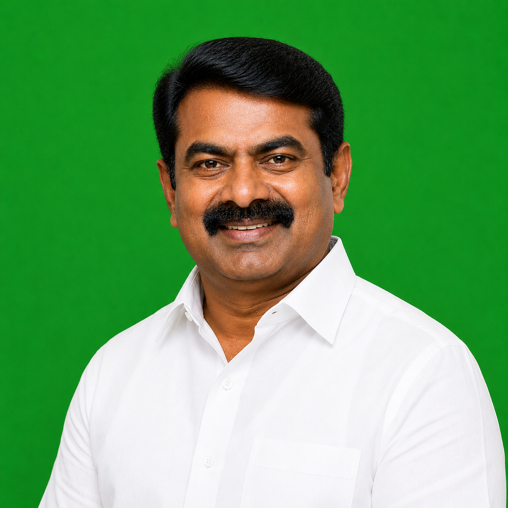

Major Political Leaders
Dravida Munnetra Kazhagam (DMK)

DMK is a major political party in Tamil Nadu led by M.K. Stalin. It focuses on social justice, education, welfare, and development.
All India Anna Dravida Munnetra Kazhagam (AIADMK)

AIADMK is led by Edappadi K. Palaniswami. The party focuses on welfare schemes and state development.
Naam Tamilar Katchi (NTK)

NTK is led by Seeman and focuses on Tamil identity, youth participation, and regional development.
Tamilaga Vettri Kazhagam (TVK)

TVK is led by actor Vijay and has gained attention among youth voters.